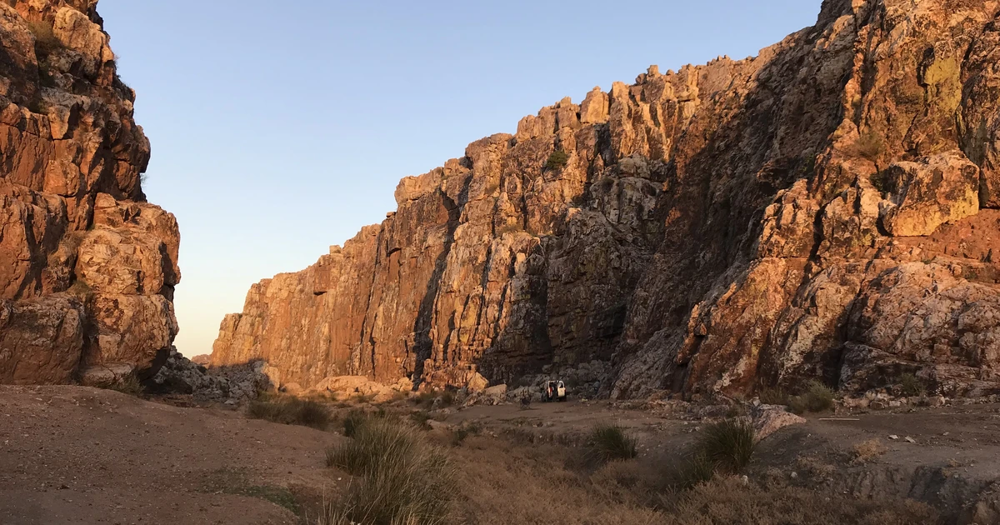
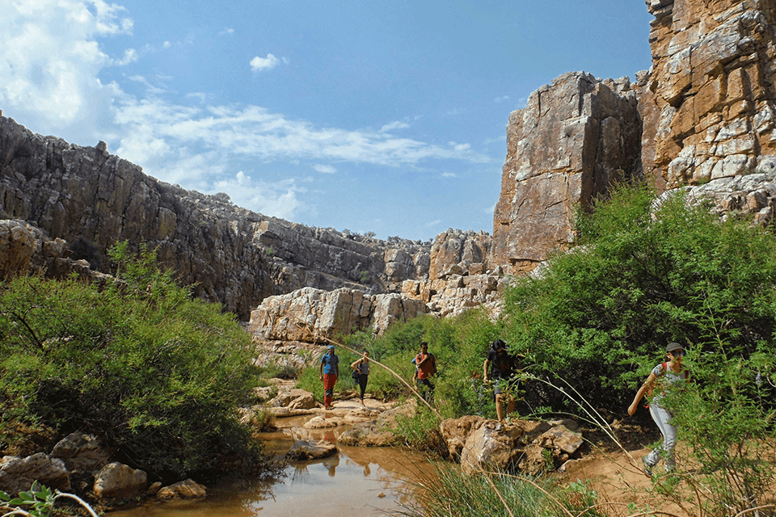

Notre tout premier atelier sur le rocher : une initiation pratique à l'équipement et au rééquipement pour les grimpeuses, encadrée par des rééquipeuses expérimentées, à Gagou — un site de quartzite au sud de Settat, à mi-chemin entre Casablanca et Marrakech.
Nous finançons les goujons, les relais, les kits de formation et l'encadrement grâce à Ulule. 8 € financent un goujon, 12 € un relais, 380 € un kit complet pour une grimpeuse.
| Dates | Avril — dates exactes à confirmer |
| Site | Gagou — quartzite, orienté ouest, 350 m d'altitude |
| Lieu | Au sud de Settat, Maroc — à mi-chemin entre Casablanca et Marrakech |
| Accès | ~74 km de Casablanca à Settat par l'autoroute de Marrakech, puis des routes locales jusqu'au canyon. Un 4x4 ou un véhicule haut sur roues est recommandé, surtout pour les ~500 derniers mètres. Itinéraire détaillé et trace GPX : cafmaroc.ffcam.fr |
| Pour qui | Ouvert aux grimpeuses, tous niveaux bienvenus |
Gagou est un site de quartzite niché dans un petit canyon creusé par un oued, entouré de palmiers, de tortues et de villages aux jardins cultivés. Les parois fracturées rouge ocre font de 10 à 50 m de haut, sont orientées ouest et restent à l'ombre jusqu'au milieu de l'après-midi. Le site a été équipé et documenté en huit secteurs par le CAF Casablanca et l'Escalade Club de l'Isère, dont le topo (2017) reste la référence pour la zone.

Les voies de Gagou ont été équipées et topographiées en 2017 — comme sur beaucoup de sites marocains, la sécurité de ce matériel dépend depuis d'un effort local de rééquipement. C'est aussi un choix pratique pour un premier atelier : accessible dans la journée depuis Casablanca, avec des voies allant du niveau débutant au 6b+, pour que le groupe puisse alterner entre l'apprentissage du rééquipement et l'escalade des voies une fois inspectées.
Cet atelier est ouvert aux grimpeuses qui veulent acquérir de vraies compétences de rééquipement, transposables ailleurs — que vous souhaitiez entretenir les voies près de chez vous, ou simplement comprendre ce qui rend sûrs les relais que vous mousquetonnez. Aucune expérience de l'équipement n'est nécessaire.
Les places sont limitées. Remplissez le formulaire ci-dessus et nous reviendrons vers vous avec les détails sur la logistique, le coût et les prochaines étapes.
Informations sur le site, l'accès et les cotations issues de Escalade à Gagou, topo du CAF Casablanca et de l'Escalade Club de l'Isère (2017).